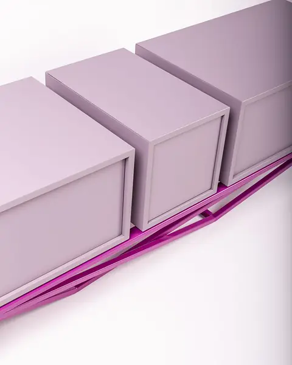
Komoda Canto
od 8 550 zł
TOP 5 w kategorii meble, 4 Design Days 2026. Szafki na stalowej kratownicy.
Komody, regały i stoliki ze stali, szkła i drewna, robione ręcznie w krótkich seriach. Kolor dobieramy pod Państwa wnętrze.
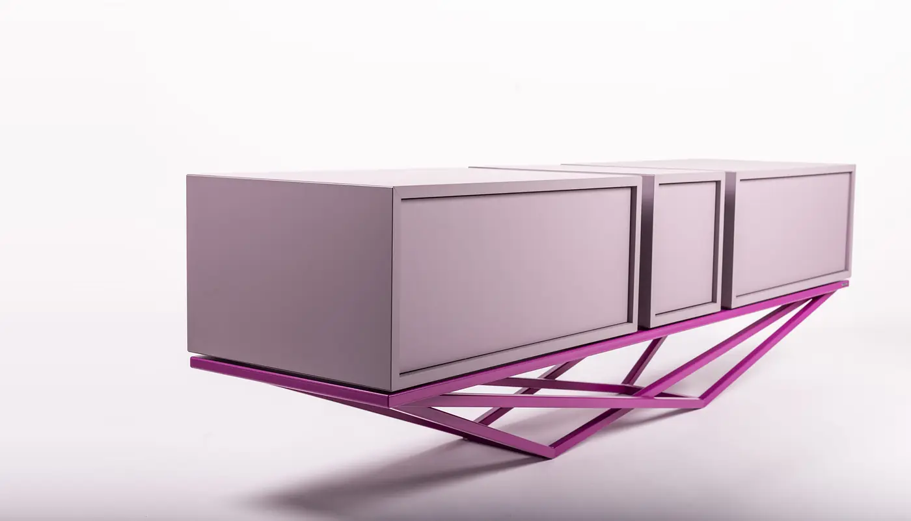
Komoda Canto, nominacja 4 Design Days 2026
Każdy z tych mebli ma zastrzeżony wzór przemysłowy i powstaje w naszej manufakturze. Wymiary, wykończenie i kolor możemy dopasować do projektu.

od 8 550 zł
TOP 5 w kategorii meble, 4 Design Days 2026. Szafki na stalowej kratownicy.
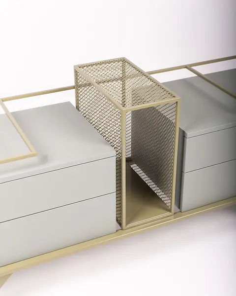
od 8 520 zł
Cztery szuflady i ażurowy moduł w stalowej ramie.
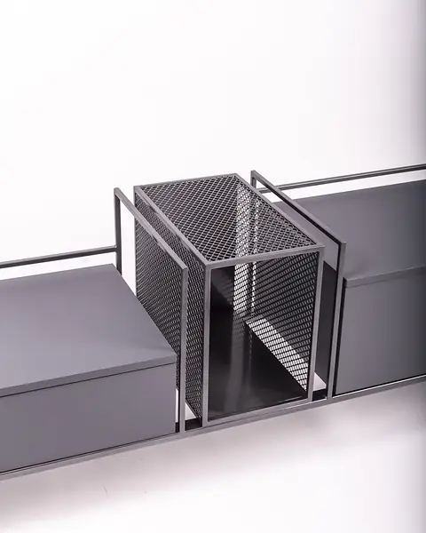
od 6 750 zł
Matowe szafki w stalowej ramie, charakter industrialny.
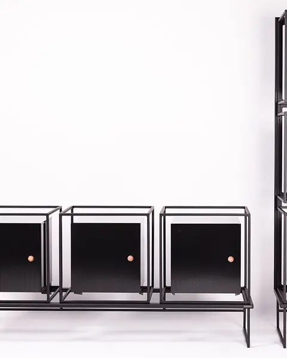
od 5 900 zł
Trzy moduły zawieszone w stalowej konstrukcji.
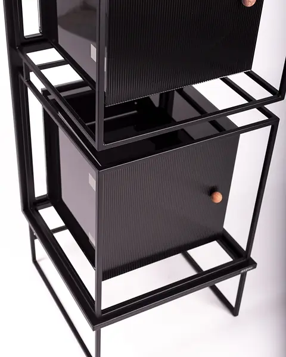
od 5 800 zł
Stal i szkło, szafki z ryflowanymi frontami.
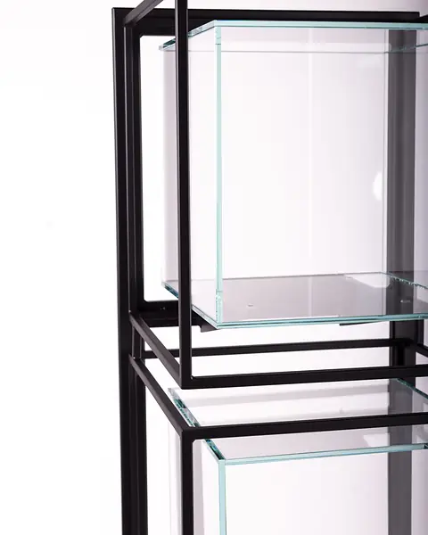
od 6 600 zł
Szklane szafki, 148 x 48 x 48 cm.
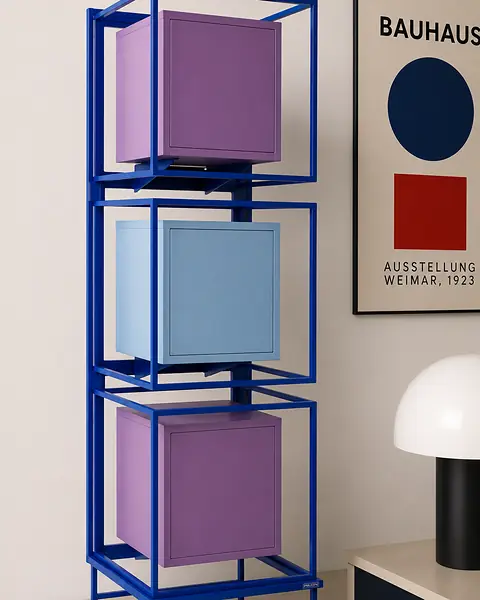
od 5 800 zł
Aksamitna matowa płyta, szafki tip-on, 67 x 148 x 48 cm.
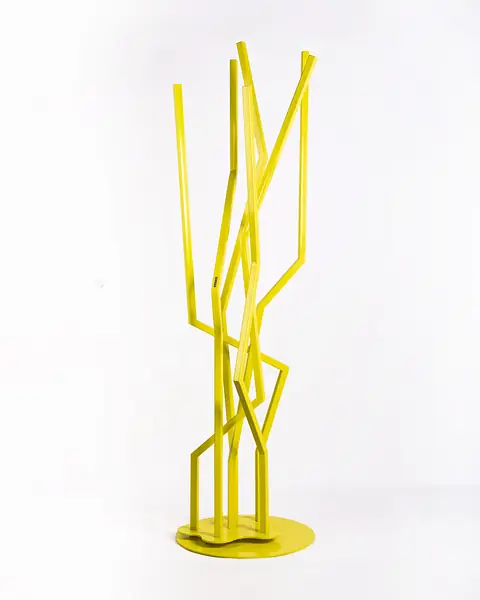
od 1 955 zł
Rzeźbiarska forma ze stali, wysokość 170 cm.
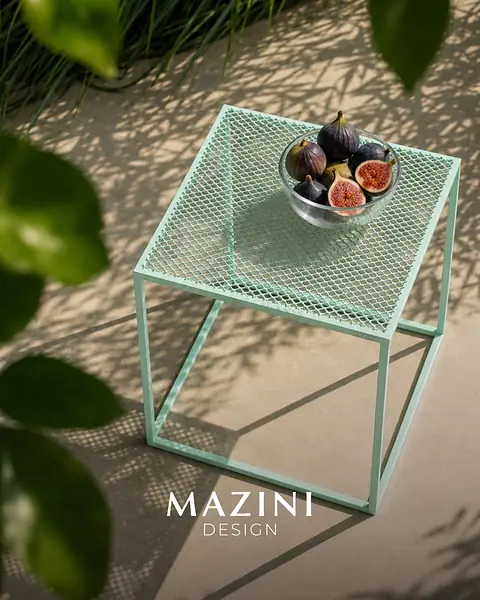
od 800 zł
Stal malowana proszkowo, do wnętrz i na zewnątrz.
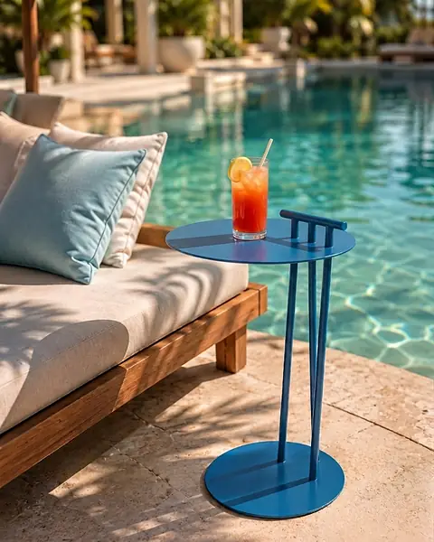
od 980 zł
Stolik pomocniczy, sprawdzi się też na tarasie.
Ceny ze sklepu mazini.pl, stan na 17.11.2026, w zależności od wybranego wariantu.
Canto to autorski projekt Mazini Design nominowany do TOP 5 w kategorii meble podczas 4 Design Days 2026, jednego z najważniejszych wydarzeń poświęconych współczesnemu designowi w Polsce.
Trzy matowe bryły leżą na stalowej kratownicy z ukośnych profili. Konstrukcja jest lekka dla oka, a przy tym sztywna i trwała, bo każde połączenie wykonujemy ręcznie.
Funkcja, forma i jakość wykonania w pełnej równowadze.
Zapytaj o CantoProjekty indywidualne tworzymy od podstaw, w ścisłej współpracy z klientem lub architektem. Nie adaptujemy gotowych schematów.
„Nie interesuje mnie masowa produkcja. Meble, które projektuję, są efektem przemyślanego procesu.”
Stalowe konstrukcje malujemy proszkowo, fronty szafek wykańczamy matowo. Ten sam mebel może być stonowany w czerni albo wyrazisty w kobalcie i magencie.
biały mat, czarny mat, ceglany, czerwony, fiolet sygnałowy, kobaltowy, magenta, niebieski, pomarańczowy, zielony trzcinowy, żółty
azure, biały, burgund, ciemna zieleń, kaszmirowy, kurkumowy, liliowy, miętowy, szałwiowy; stoliki Cube w dowolnym kolorze z palety RAL
Dla architektów i projektantów wnętrz. Wspieramy na każdym etapie: od koncepcji, przez dobór materiałów i kolorystyki, po realizację mebli dopasowanych do założeń projektu.
Współpracę z projektantami prowadzi osobiście Izabela Kózka, właścicielka Mazini Design.
Zapytaj o współpracęNapiszą Państwo, jaki mebel lub jakie miejsce mają na myśli. Odpowiemy z propozycją wymiarów, kolorów i terminu.